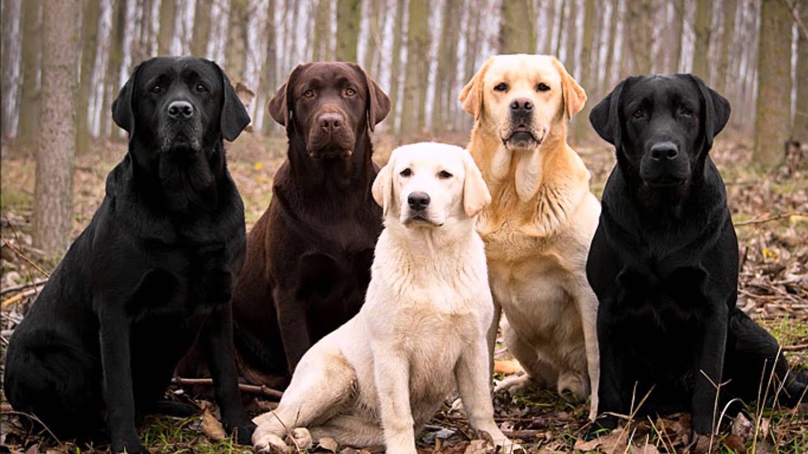

El labrador retriever (conocido también como cobrador de Labradoro perdiguero de Labrador) es una raza canina originaria de Terranova, en la actual Canadá. Es una de las razas más populares del mundo por la cantidad de ejemplares registrados.
Su excepcional afabilidad, gentileza, inteligencia, nobleza, energía y bondad, hacen que los labradores sean generalmente considerados como buenos compañeros para personas de todas las edades, así como fiables perros trabajadores, comúnmente formando parte de las brigadas caninas de la policía en operativos antidroga, antiexplosivos, de búsqueda y rescate, entre otros. Con adiestramiento, el labrador es una de las razas de perro más dócil, obediente y talentosa que existen

Historia
Los antepasados del labrador actual se originaron en la isla de Terranova, ahora parte de la provincia de Terranova y Labrador, Canadá. El precursor de la raza de Labrador fue el perro de aguas de San Juan, una raza que surgió a través de la cría hecha por los primeros colonos de la isla en el siglo XVI. Los antepasados de los perros de San Juan no se conocen, pero probablemente fueron una mezcla aleatoria de razas de trabajo inglesas, irlandesas y portuguesas.